001 JibanyanNormal, source et méthode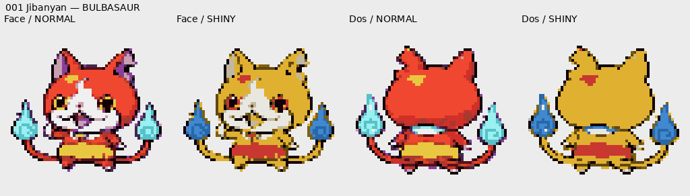REFERENCES_ORIGINALES/001_Jibanyan.webpPalette intégralement classée par zone ; nuances harmonisées.
002 BandinyanNormal, source et méthodeSprite normal de l'autre NyanPalette intégralement classée par zone ; nuances harmonisées.
003 ÉpinyanNormal, source et méthodeSprite normal de l'autre NyanPalette intégralement classée par zone ; nuances harmonisées.
004 ShogunyanNormal, source et méthode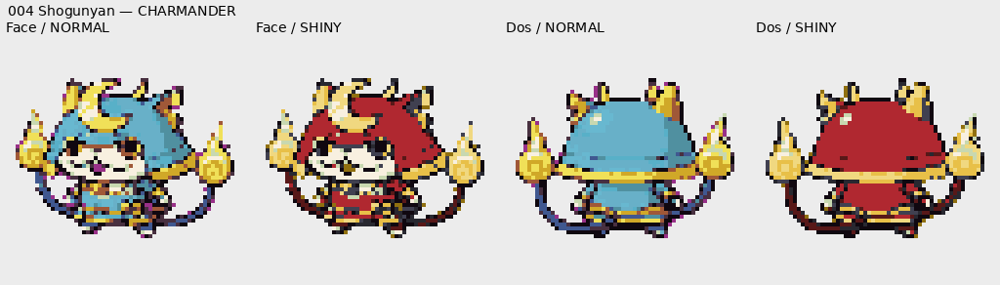REFERENCES_ORIGINALES/004_Shogunyan.webpPalette intégralement classée par zone ; nuances harmonisées.
005 KomasanNormal, source et méthode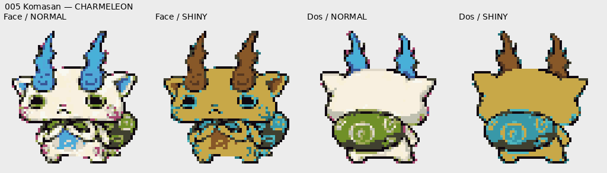REFERENCES_ORIGINALES/005_Komasan.webpPalette intégralement classée par zone ; nuances harmonisées.
006 Komaous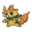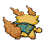Normal, source et méthode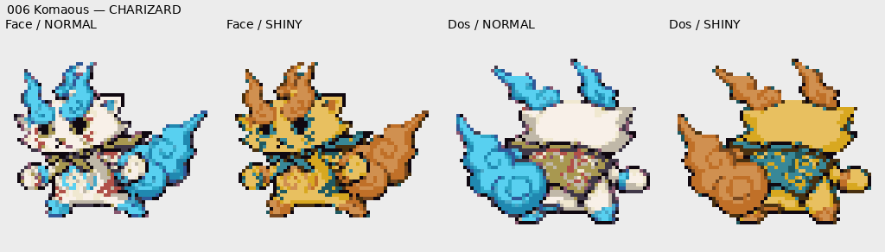REFERENCES_ORIGINALES/006_Komaous.webpPalette intégralement classée par zone ; nuances harmonisées.
007 KomastarNormal, source et méthode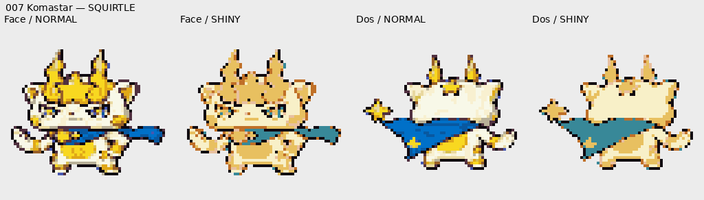REFERENCES_ORIGINALES/006_Komaous.webpPalette intégralement classée par zone ; nuances harmonisées.
008 WhisperNormal, source et méthode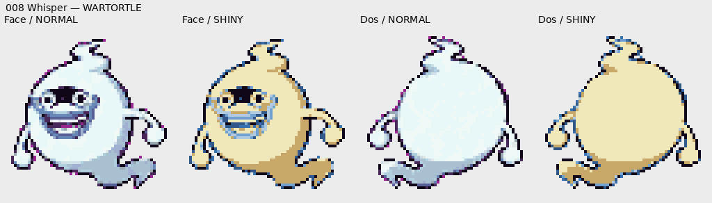EXTRAS/Whisperocrates_reference.pngPalette intégralement classée par zone ; nuances harmonisées.
009 Cigalopin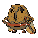Normal, source et méthode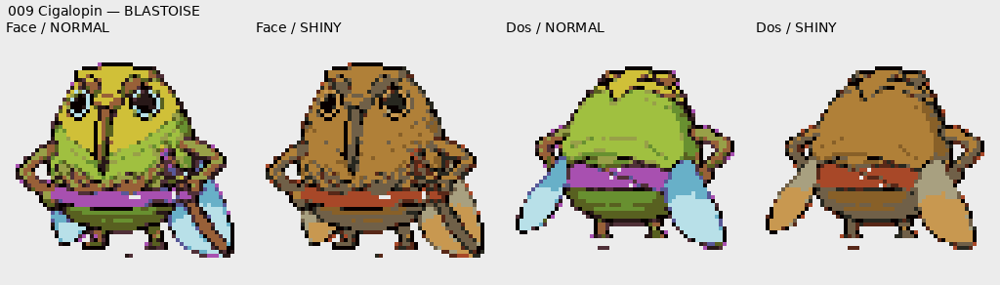REFERENCES_ORIGINALES/010_Cigallard.webpPalette intégralement classée par zone ; nuances harmonisées.
010 Cigallard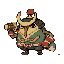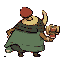Normal, source et méthode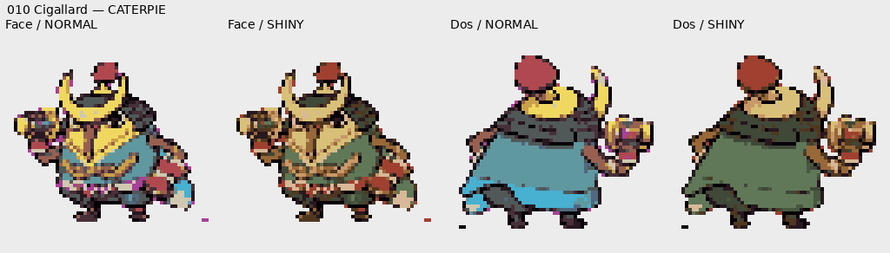REFERENCES_ORIGINALES/010_Cigallard.webpPalette intégralement classée par zone ; nuances harmonisées.
011 MurhaineNormal, source et méthode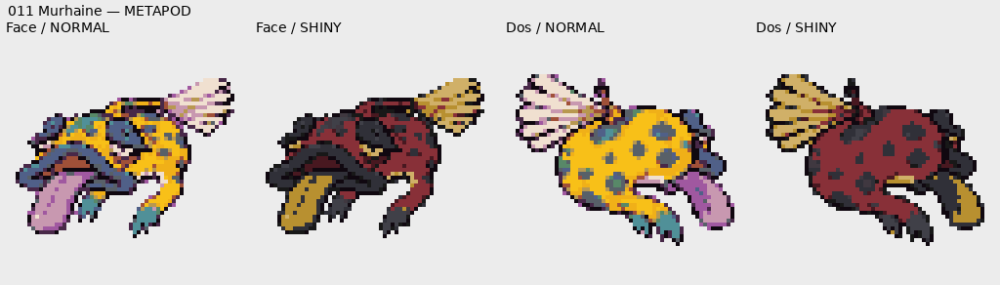REFERENCES_ORIGINALES/012_Saumhonni.webpPalette intégralement classée par zone ; nuances harmonisées.
012 SaumhonniNormal, source et méthode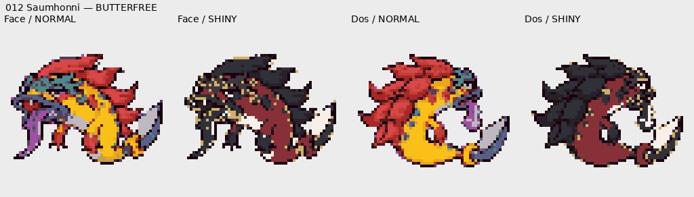REFERENCES_ORIGINALES/012_Saumhonni.webpPalette intégralement classée par zone ; nuances harmonisées.
013 DracounetNormal, source et méthode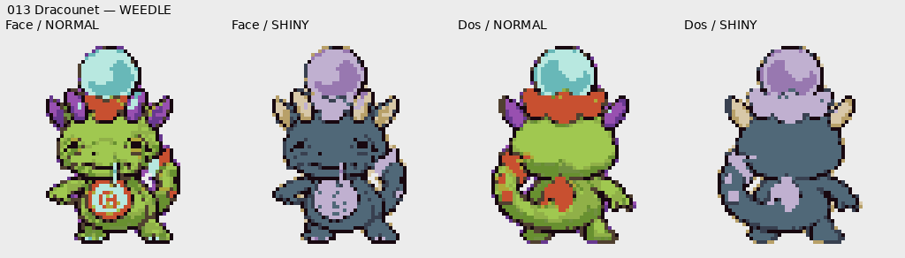REFERENCES_ORIGINALES/014_Sir_Dragon.webpPalette intégralement classée par zone ; nuances harmonisées.
014 Sir Dragon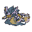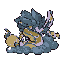Normal, source et méthode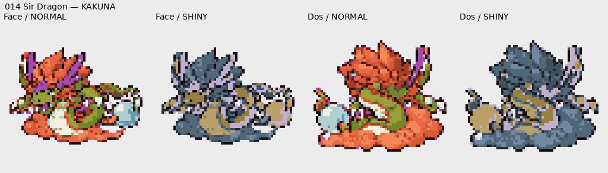REFERENCES_ORIGINALES/014_Sir_Dragon.webpPalette intégralement classée par zone ; nuances harmonisées.
015 Octorgone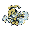Normal, source et méthode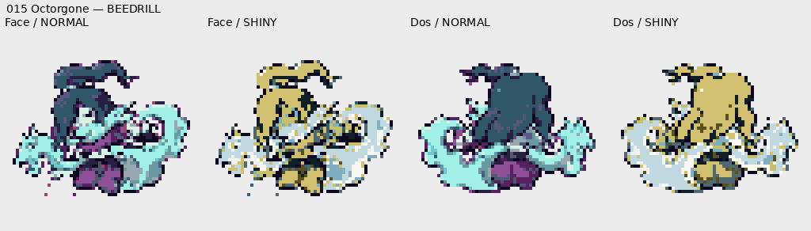REFERENCES_ORIGINALES/015_Octorgone.webpPalette intégralement classée par zone ; nuances harmonisées.
016 Kyubi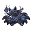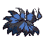Normal, source et méthode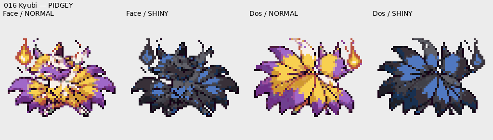REFERENCES_ORIGINALES/016_Kyubi.webpPalette intégralement classée par zone ; nuances harmonisées.
017 Robonyan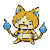Normal, source et méthode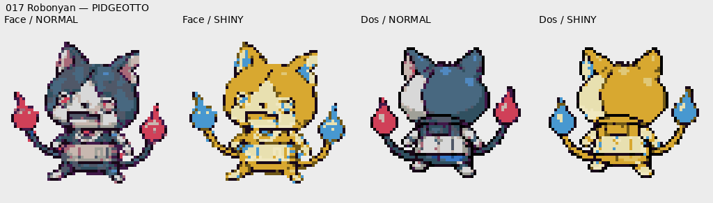REFERENCES_ORIGINALES/017_Robonyan.webpPalette intégralement classée par zone ; nuances harmonisées.
018 Robonyan FNormal, source et méthode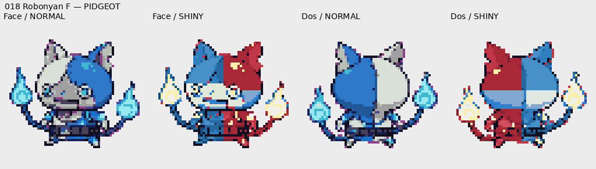REFERENCES_ORIGINALES/018_Robonyan_F.webpMasques localisés : matières partageant une couleur séparées.
019 Robony.28.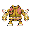Normal, source et méthode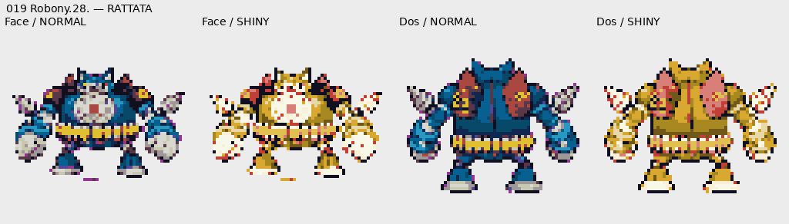REFERENCES_ORIGINALES/019_Robonyan_28.webpPalette intégralement classée par zone ; nuances harmonisées.
020 Faux KappaNormal, source et méthode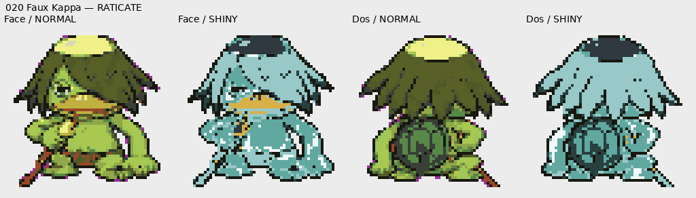REFERENCES_ORIGINALES/020_Faux_Kappa.webpPalette intégralement classée par zone ; nuances harmonisées.
021 TukappaNormal, source et méthode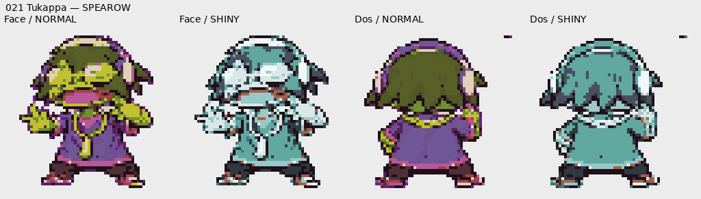REFERENCES_ORIGINALES/020_Faux_Kappa.webpPalette intégralement classée par zone ; nuances harmonisées.
022 Granpapéti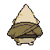Normal, source et méthode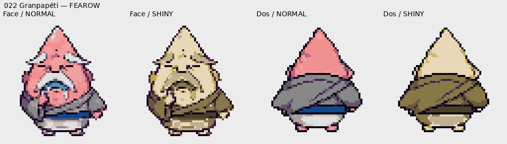REFERENCES_ORIGINALES/022_Granpapeti.webpPalette intégralement classée par zone ; nuances harmonisées.
023 Puissanfon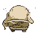Normal, source et méthode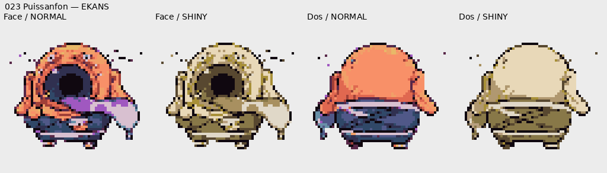REFERENCES_ORIGINALES/022_Granpapeti.webpPalette intégralement classée par zone ; nuances harmonisées.
024 Nanpart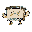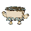Normal, source et méthode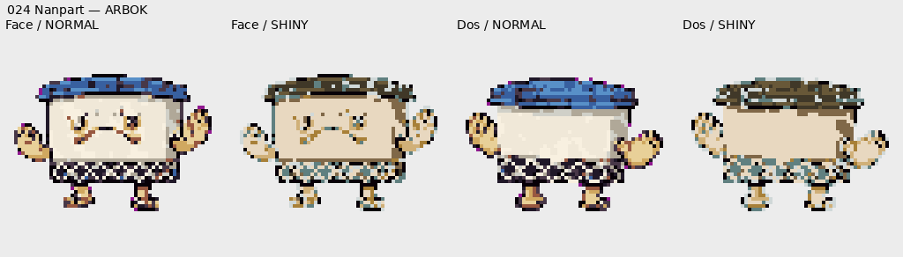REFERENCES_ORIGINALES/025_Passpa.webpPalette intégralement classée par zone ; nuances harmonisées.
025 Passpa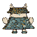Normal, source et méthode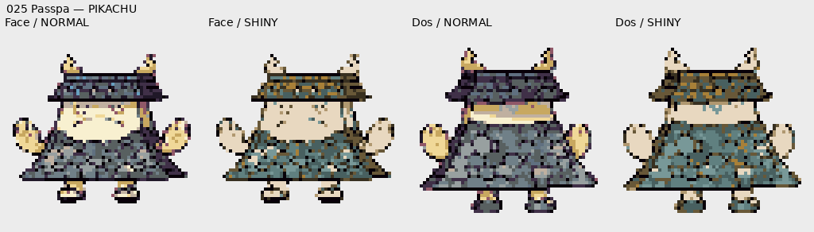REFERENCES_ORIGINALES/025_Passpa.webpPalette intégralement classée par zone ; nuances harmonisées.
026 Angélik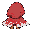Normal, source et méthode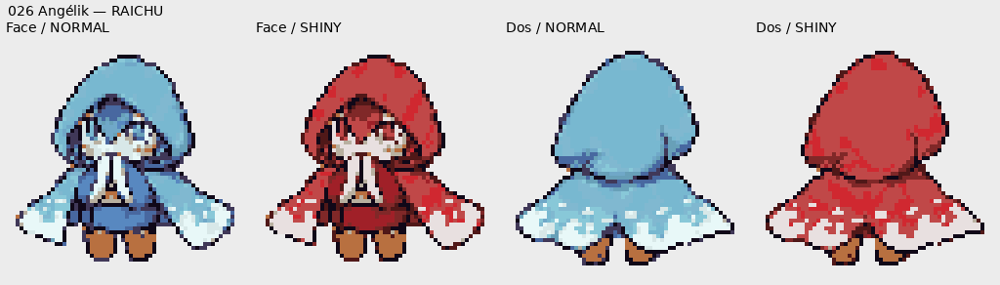REFERENCES_ORIGINALES/027_Blizzaria.webpPalette intégralement classée par zone ; nuances harmonisées.
027 BlizzariaNormal, source et méthode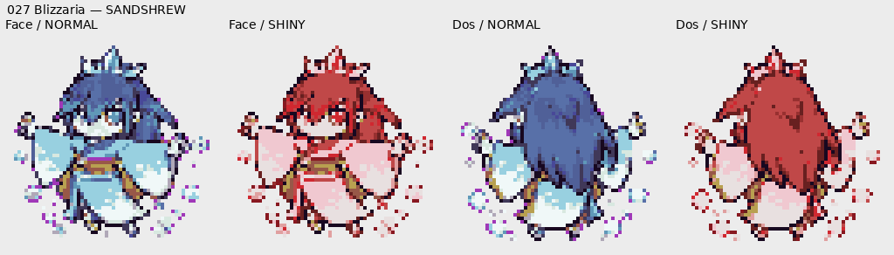REFERENCES_ORIGINALES/027_Blizzaria.webpPalette intégralement classée par zone ; nuances harmonisées.
028 Feulion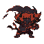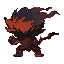Normal, source et méthode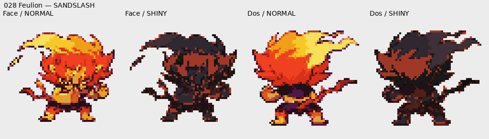REFERENCES_ORIGINALES/028_Feulion.webpPalette intégralement classée par zone ; nuances harmonisées.
029 PadrézoNormal, source et méthode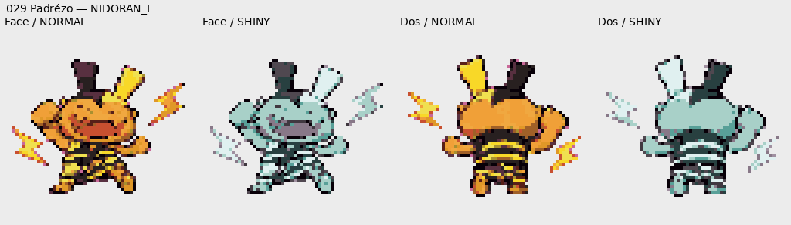REFERENCES_ORIGINALES/030_Emettor.webpPalette intégralement classée par zone ; nuances harmonisées.
030 ÉmettorNormal, source et méthode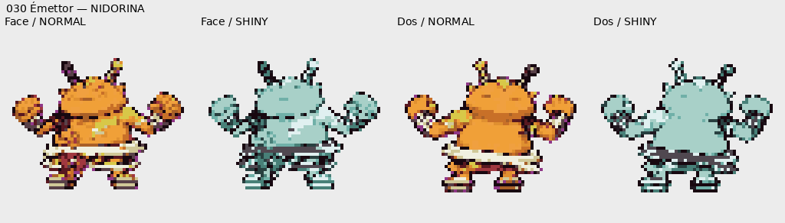REFERENCES_ORIGINALES/030_Emettor.webpPalette intégralement classée par zone ; nuances harmonisées.
031 CrochoNormal, source et méthode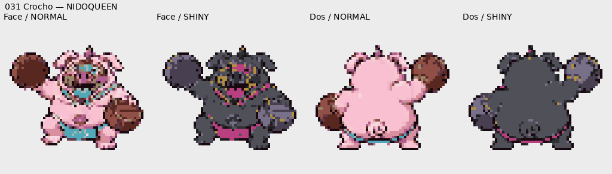REFERENCES_ORIGINALES/031_Crocho.webpPalette intégralement classée par zone ; nuances harmonisées.
032 Potofeu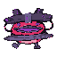Normal, source et méthodeREFERENCES_ORIGINALES/032_Potofeu.pngPalette intégralement classée par zone ; nuances harmonisées.
033 MisterreNormal, source et méthodeREFERENCES_ORIGINALES/033_Misterre.webpPalette intégralement classée par zone ; nuances harmonisées.
038 BonnetoNormal, source et méthodeREFERENCES_ORIGINALES/038_Bonneto.webpPalette intégralement classée par zone ; nuances harmonisées.
039 SabriNormal, source et méthodeREFERENCES_ORIGINALES/039_Sabri.webpPalette intégralement classée par zone ; nuances harmonisées.
040 DémophageNormal, source et méthodeREFERENCES_ORIGINALES/040_Demophage.webpPalette intégralement classée par zone ; nuances harmonisées.
041 BrumetteNormal, source et méthodeREFERENCES_ORIGINALES/041_Brumette.webpPalette intégralement classée par zone ; nuances harmonisées.
042 BrumellaNormal, source et méthodeREFERENCES_ORIGINALES/041_Brumette.webpPalette intégralement classée par zone ; nuances harmonisées.
043 TélémirNormal, source et méthodeREFERENCES_ORIGINALES/043_Telemir.webpPalette intégralement classée par zone ; nuances harmonisées.
044 Triptic-t.Normal, source et méthodeREFERENCES_ORIGINALES/043_Telemir.webpPalette intégralement classée par zone ; nuances harmonisées.
045 NihilistikNormal, source et méthodeREFERENCES_ORIGINALES/046_Emousstik.webpPalette intégralement classée par zone ; nuances harmonisées.
046 ÉmousstikNormal, source et méthodeREFERENCES_ORIGINALES/046_Emousstik.webpPalette intégralement classée par zone ; nuances harmonisées.
047 Humainequ.Normal, source et méthodeREFERENCES_ORIGINALES/047_Humainequin.webpPalette intégralement classée par zone ; nuances harmonisées.
049 BakuNormal, source et méthodeREFERENCES_ORIGINALES/049_Baku.webpPalette intégralement classée par zone ; nuances harmonisées.
050 BakukuNormal, source et méthodeREFERENCES_ORIGINALES/049_Baku.webpPalette intégralement classée par zone ; nuances harmonisées.
052 BouhNormal, source et méthodeREFERENCES_ORIGINALES/052_Bouh.webpPalette intégralement classée par zone ; nuances harmonisées.
059 FouétarNormal, source et méthodeREFERENCES_ORIGINALES/059_Fouetar.webpPalette intégralement classée par zone ; nuances harmonisées.
060 Superfoué.Normal, source et méthodeREFERENCES_ORIGINALES/059_Fouetar.webpPalette intégralement classée par zone ; nuances harmonisées.
063 Chihuagla.Normal, source et méthodeREFERENCES_ORIGINALES/064_Frohuahua.webpPalette intégralement classée par zone ; nuances harmonisées.
064 FroahuahuaNormal, source et méthodeREFERENCES_ORIGINALES/064_Frohuahua.webpPalette intégralement classée par zone ; nuances harmonisées.
065 GorgouilleNormal, source et méthodeREFERENCES_ORIGINALES/065_Gorgouille.webpPalette intégralement classée par zone ; nuances harmonisées.
066 SirénéeNormal, source et méthodeEXTRAS/Sirenee_Sirenite_reference.webpMasques localisés : matières partageant une couleur séparées.
067 SirènitéNormal, source et méthodeEXTRAS/Sirenee_Sirenite_reference.webpMasques localisés : matières partageant une couleur séparées.
068 Papa RessNormal, source et méthodeREFERENCES_ORIGINALES/069_Ralbouc.jpgPalette intégralement classée par zone ; nuances harmonisées.
069 RalboucNormal, source et méthodeREFERENCES_ORIGINALES/069_Ralbouc.jpgPalette intégralement classée par zone ; nuances harmonisées.
071 InsomnelleNormal, source et méthodeREFERENCES_ORIGINALES/071_Insomnel.webpPalette intégralement classée par zone ; nuances harmonisées.
072 Tata AuraNormal, source et méthodeREFERENCES_ORIGINALES/072_Tata_Aura.webpPalette intégralement classée par zone ; nuances harmonisées.
073 Tontonner.Normal, source et méthodeREFERENCES_ORIGINALES/073_Tontonnerre.webpPalette intégralement classée par zone ; nuances harmonisées.
078 Coléroptè.Normal, source et méthodeREFERENCES_ORIGINALES/079_Rhinolimit.webpPalette intégralement classée par zone ; nuances harmonisées.
079 RhinolimitNormal, source et méthodeREFERENCES_ORIGINALES/079_Rhinolimit.webpPalette intégralement classée par zone ; nuances harmonisées.
080 ScatcheurNormal, source et méthodeREFERENCES_ORIGINALES/081_Scarmouche.webpPalette intégralement classée par zone ; nuances harmonisées.
081 ScarmoucheNormal, source et méthodeREFERENCES_ORIGINALES/081_Scarmouche.webpPalette intégralement classée par zone ; nuances harmonisées.
082 NokoNormal, source et méthodeREFERENCES_ORIGINALES/082_Noko.webpPalette intégralement classée par zone ; nuances harmonisées.
083 NénunokoNormal, source et méthodeREFERENCES_ORIGINALES/082_Noko.webpPalette intégralement classée par zone ; nuances harmonisées.
084 TryptikNormal, source et méthodeREFERENCES_ORIGINALES/084_Trytik.webpPalette intégralement classée par zone ; nuances harmonisées.
085 CarpitaineNormal, source et méthodeREFERENCES_ORIGINALES/085 - Carpitaine.webpPalette intégralement classée par zone ; nuances harmonisées.
087 KappacapNormal, source et méthodeREFERENCES_ORIGINALES/088 - Appak.webpPalette intégralement classée par zone ; nuances harmonisées.
088 AppakNormal, source et méthodeREFERENCES_ORIGINALES/088 - Appak.webpPalette intégralement classée par zone ; nuances harmonisées.
091 ChiperpiouNormal, source et méthodeREFERENCES_ORIGINALES/091 - Chiperpiou.webpPalette intégralement classée par zone ; nuances harmonisées.
092 RapiafNormal, source et méthodeREFERENCES_ORIGINALES/091 - Chiperpiou.webpPalette intégralement classée par zone ; nuances harmonisées.
099 C.Antonic.Normal, source et méthodeREFERENCES_ORIGINALES/099 - Coach Antonic.webpPalette intégralement classée par zone ; nuances harmonisées.
100 UsapyonNormal, source et méthodeREFERENCES_ORIGINALES/100 - Usapion.webpPalette intégralement classée par zone ; nuances harmonisées.
101 EmperorNormal, source et méthodeREFERENCES_ORIGINALES/100 - Usapion.webpPalette intégralement classée par zone ; nuances harmonisées.
106 PitouNormal, source et méthodeREFERENCES_ORIGINALES/107 - Choubidou.webpPalette intégralement classée par zone ; nuances harmonisées.
107 ChoubidouNormal, source et méthodeREFERENCES_ORIGINALES/107 - Choubidou.webpPalette intégralement classée par zone ; nuances harmonisées.
110 Espreschi.Normal, source et méthodeREFERENCES_ORIGINALES/110 - Espreschiot.webpPalette intégralement classée par zone ; nuances harmonisées.
111 Duc Delaf.Normal, source et méthodeREFERENCES_ORIGINALES/111 - Duc DeLaFeuille.webpPalette intégralement classée par zone ; nuances harmonisées.
112 Feuildech.Normal, source et méthodeREFERENCES_ORIGINALES/111 - Duc DeLaFeuille.webpPalette intégralement classée par zone ; nuances harmonisées.
117 Raton Gla.Normal, source et méthodeREFERENCES_ORIGINALES/117 - Raton Glandeur.webpPalette intégralement classée par zone ; nuances harmonisées.
119 SamoussraïNormal, source et méthodeREFERENCES_ORIGINALES/119 - Samoussrai.webpPalette intégralement classée par zone ; nuances harmonisées.
120 RonimpecNormal, source et méthodeREFERENCES_ORIGINALES/119 - Samoussrai.webpMasques localisés : matières partageant une couleur séparées.
124 ChaipoNormal, source et méthodeREFERENCES_ORIGINALES/124 - Chaipo.webpPalette intégralement classée par zone ; nuances harmonisées.
125 MémogreNormal, source et méthodeREFERENCES_ORIGINALES/124 - Chaipo.webpPalette intégralement classée par zone ; nuances harmonisées.
127 Chauvkipe.Normal, source et méthodeREFERENCES_ORIGINALES/128 - Chauv'coucou.webpPalette intégralement classée par zone ; nuances harmonisées.
128 Chauv'cou.Normal, source et méthodeREFERENCES_ORIGINALES/128 - Chauv'coucou.webpPalette intégralement classée par zone ; nuances harmonisées.
129 PachycoulNormal, source et méthodeREFERENCES_ORIGINALES/129 - Pachycool.webpPalette intégralement classée par zone ; nuances harmonisées.
130 PachypipiNormal, source et méthodeREFERENCES_ORIGINALES/129 - Pachycool.webpPalette intégralement classée par zone ; nuances harmonisées.
131 LoubarbareNormal, source et méthodeREFERENCES_ORIGINALES/131 - Loubarbare.webpPalette intégralement classée par zone ; nuances harmonisées.
132 RacaïdNormal, source et méthodeREFERENCES_ORIGINALES/132 - Racaïd.webpPalette intégralement classée par zone ; nuances harmonisées.
134 SabruineNormal, source et méthodeREFERENCES_ORIGINALES/134 - Sabruine.webpPalette intégralement classée par zone ; nuances harmonisées.
135 SabrilleNormal, source et méthodeREFERENCES_ORIGINALES/135 - Sabrille.webpPalette intégralement classée par zone ; nuances harmonisées.
142 LulugubreNormal, source et méthodeREFERENCES_ORIGINALES/142 - Lulugubre.webpPalette intégralement classée par zone ; nuances harmonisées.
143 ToumouNormal, source et méthodeREFERENCES_ORIGINALES/144 - Lamlam'mou.webpPalette intégralement classée par zone ; nuances harmonisées.
144 Lamlam'mouNormal, source et méthodeREFERENCES_ORIGINALES/144 - Lamlam'mou.webpPalette intégralement classée par zone ; nuances harmonisées.
145 SavantardNormal, source et méthodeREFERENCES_ORIGINALES/145 - Savantard.webpMasques localisés : matières partageant une couleur séparées.
149 HovernyanNormal, source et méthodeREFERENCES_ORIGINALES/149 - Hovernyan.webpPalette intégralement classée par zone ; nuances harmonisées.
150 EnmaNormal, source et méthodeREFERENCES_ORIGINALES/150 - Enma.webpMasques localisés : matières partageant une couleur séparées.